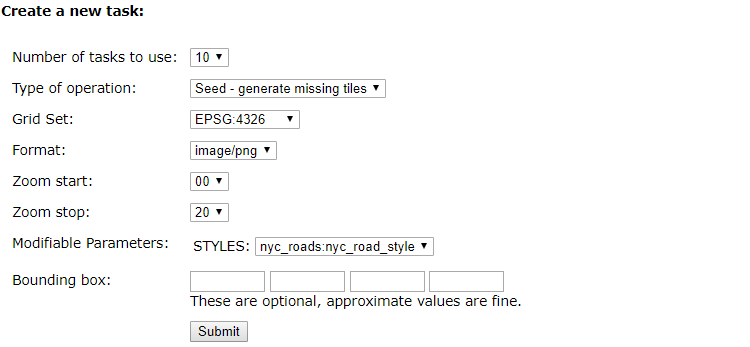
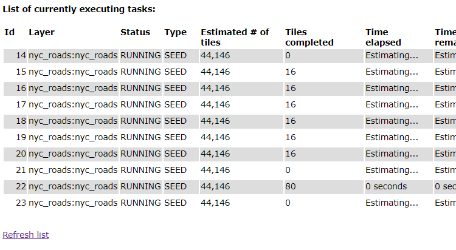

生成图层瓦片数据
地图数据通常以瓦片图的形式发布，而访问量比较大的时候就不能让GeoServer实时创建瓦片图， 应提前生成瓦片图，让服务器直接提供所需的图像，减轻服务器的压力。
生成图层瓦片图
GeoServer提供了现成的切图工具，可以将矢量图层预先切成标准的瓦片数据。
在WAI中点击左侧的Tile Caching>Tile Layers，右侧显示现有的图层列表，
点击nyc_roads图层所在行右侧的Seed/Truncate，进入瓦片制作工具。
在Create a new task中修改参数
Number of tasks to use使用的线程数为10
Zoom stop最大级别为20，由于数据量比较小，所以到20级也不会很大。

点击submit按钮就开始切割了，可以在表格中看到进度

过一会点击Refresh list链接，查看进度，切片应该很快就完成了。
切片完成后可以到<GEOSERVER_DATA_DIR>/gwc/nyc_roads_nyc_roads中看到切好的图片，
这里<GEOSERVER_DATA_DIR>是GeoServer的数据目录，nyc_roads_nyc_roads是工作区和图层名的组合。